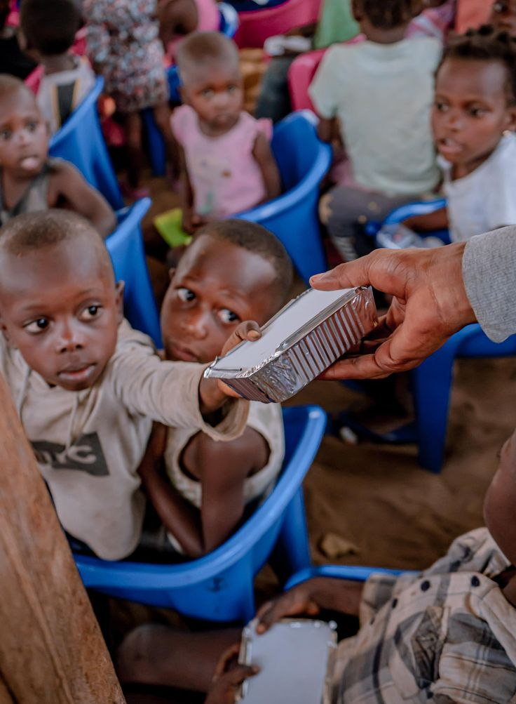
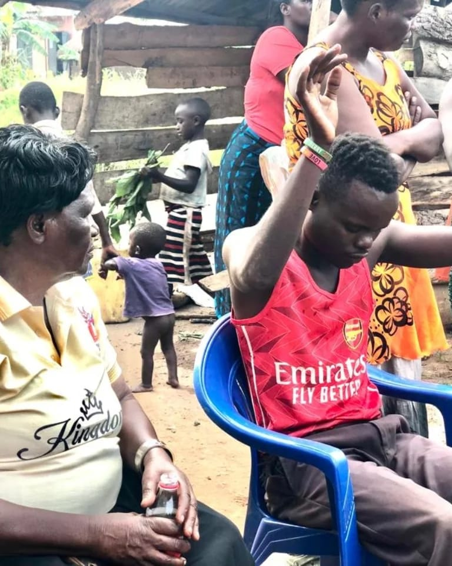
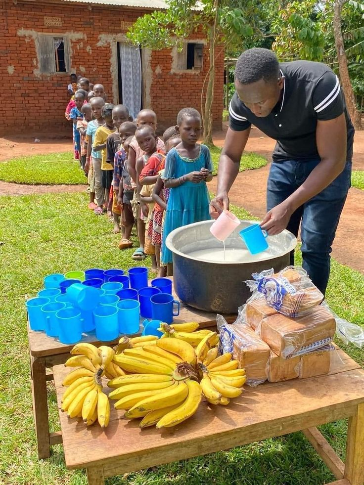
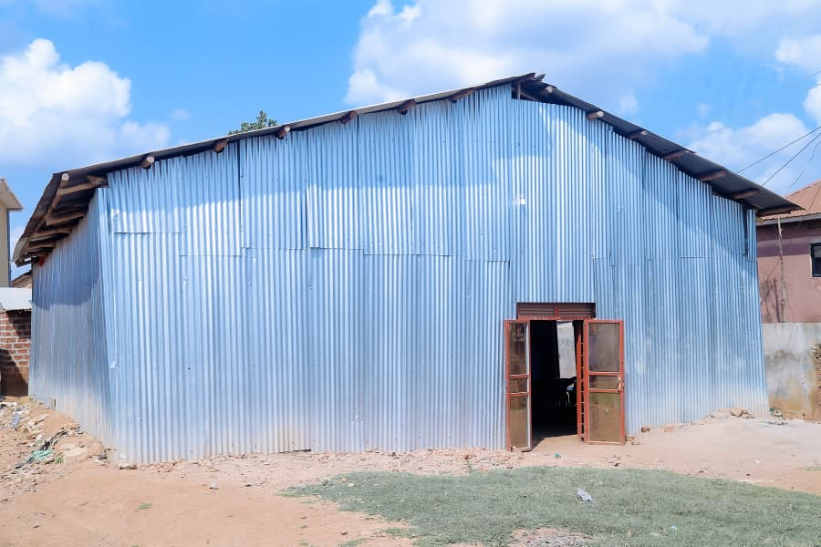
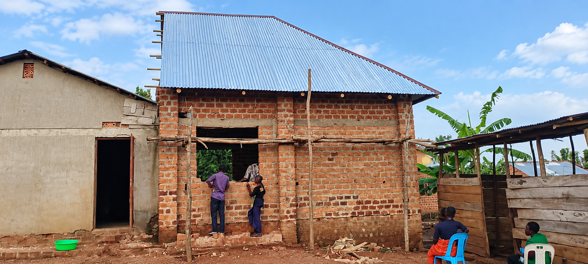
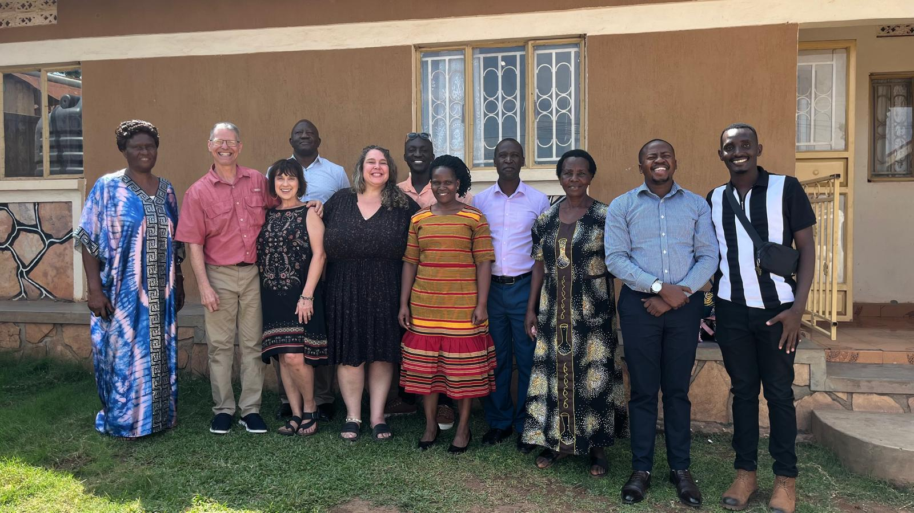
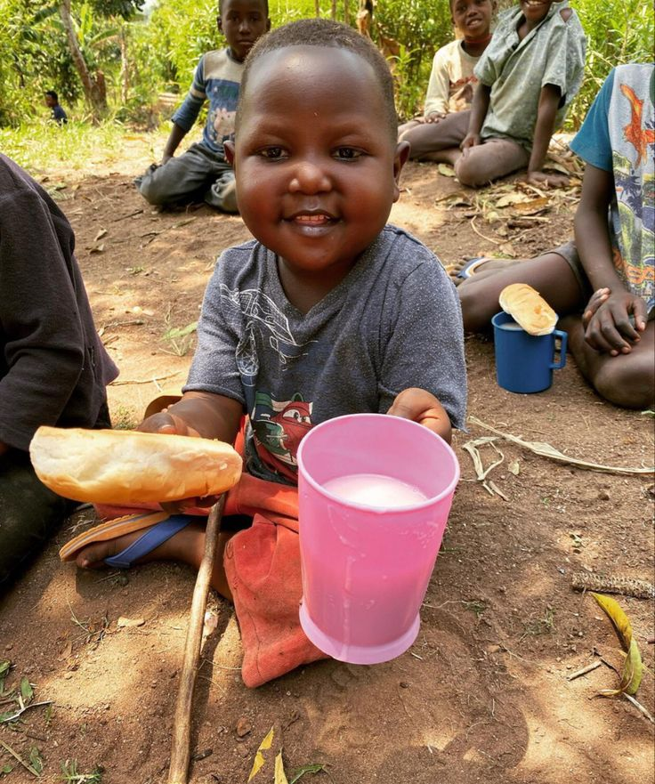
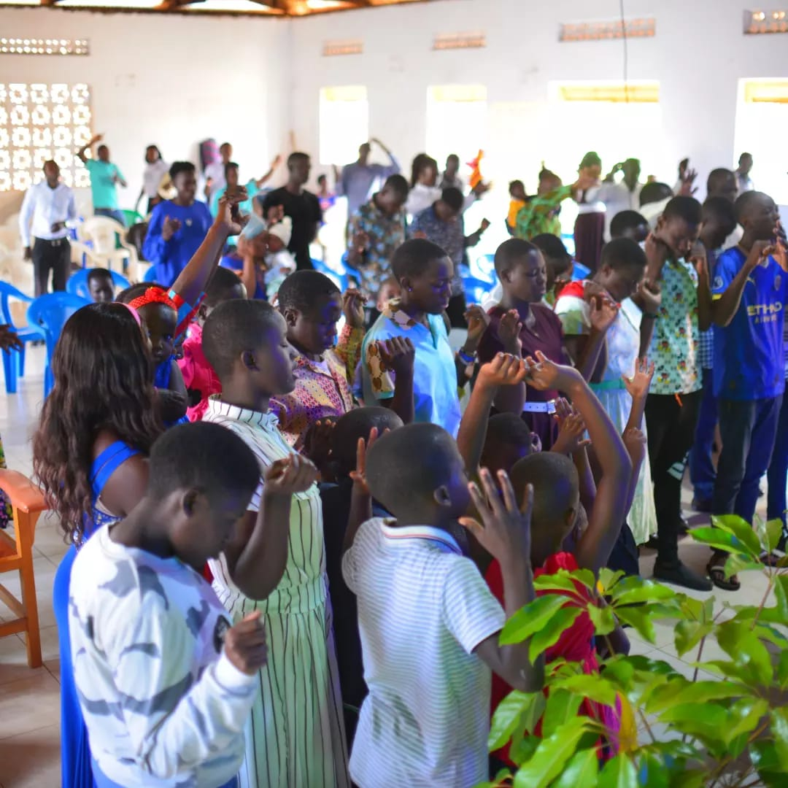
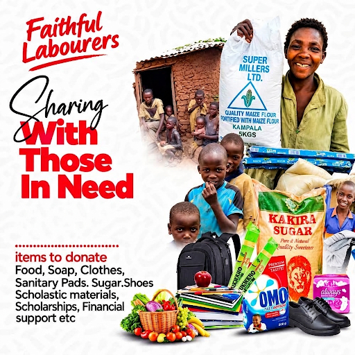

Kampala District
Kawempe Pentecostal Church
A Christian community committed to worship, fellowship, Gospel ministry, and service.
Faithful Labourers
Faithful Labourers is a Christian organization committed to spreading the Gospel of Jesus Christ, establishing Pentecostal churches, and demonstrating God's love through compassionate service across Uganda.

Faithful Labourers is a Christian organization committed to spreading the Gospel of Jesus Christ, establishing Pentecostal churches, and demonstrating God's love through compassionate service.
Through churches in communities such as Kampala, Wakiso, and Luwero, we seek to share faith, hope, and salvation while supporting children, elderly people, families, and people in need.

Proclaiming Christ through faithful teaching and community discipleship.

Direct assistance to vulnerable children, elderly, and local families.
Serving God and communities through faith, compassion, and action.
Sharing the message of Jesus Christ and bringing hope, faith, and salvation to communities through active evangelism and community gatherings.
Supporting the establishment and spiritual growth of Pentecostal churches within local districts to build strong spiritual foundations.
Demonstrating God's love through compassionate service to vulnerable children, elderly citizens, and struggling families.
Building resilient, supportive communities rooted in God's Word, unity, practical love, and dedicated Christian service.
Serving communities through local Pentecostal churches across Uganda.
A Christian community committed to worship, fellowship, Gospel ministry, and service.

Wakiso DistrictA growing church serving families through faith, fellowship, and Gospel ministry.

Luwero DistrictSharing God's love and supporting spiritual and community development.
Our faith calls us to serve others with love and compassion. Through outreach initiatives, we seek to support vulnerable children, elderly people, families, and communities in need.
A glimpse into worship, community, outreach, and fellowship.



Together, we can serve communities and demonstrate God's love.

Support the ministry through prayer and spiritual partnership. Your intercession strengthens our outreach and pastoral workers across Uganda.
Offer your time, practical skills, and talents to serve communities during local outreach days, youth mentorship, and medical or food relief programs.
Directly support outreach programs, church development initiatives, and community care for elderly and vulnerable children.
Work alongside Faithful Labourers to expand our mission fields and plant sustainable fellowship centers in rural districts.
Whether you have a message of encouragement, prayer request, or query, we would love to hear from you.